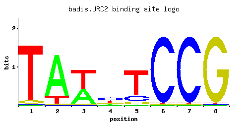
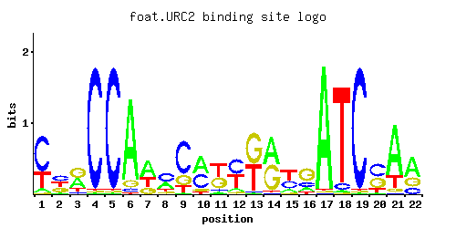
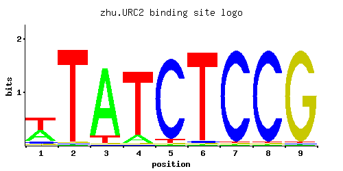
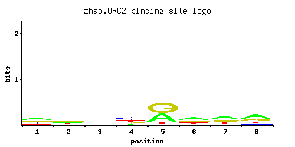

Putative Zn(II)2Cys6 motif containing transcription factor; non-essential gene identified in a screen for mutants with increased levels of rDNA transcription; similar to S. kluyveri Urc2p involved in uracil catabolism
01 / RECOMMENDED MATRIX
Best-performing DNA-binding model. Fisher’s P-value 7.89e-10
Information content 17.29
Max PWM score 15.15
Recommended cutoff 13.7
View and copy the recommended matrices ↘ Position frequency matrix (PFM) Copy
A | 0.162 0.036 0.072 0.001 0.001 0.001 0.107 0.001 0.001 0.162 0.662
C | 0.088 0.924 0.036 0.959 0.997 0.001 0.072 0.997 0.001 0.088 0.088
G | 0.123 0.001 0.107 0.004 0.001 0.997 0.820 0.001 0.994 0.588 0.088
T | 0.627 0.039 0.785 0.036 0.001 0.001 0.001 0.001 0.004 0.162 0.162
Position count matrix (PCM) Copy
A | 16 3 7 0 0 0 10 0 0 16 66
C | 8 92 3 95 99 0 7 99 0 8 8
G | 12 0 10 0 0 99 82 0 99 58 8
T | 62 3 78 3 0 0 0 0 0 16 16
Position weight matrix (PWM) Copy
A | -0.68 -2.18 -1.49 -5.77 -5.77 -5.77 -1.10 -5.77 -5.77 -0.68 0.73
C | -0.72 1.64 -1.61 1.67 1.71 -5.19 -0.92 1.71 -5.19 -0.72 -0.72
G | -0.38 -5.19 -0.52 -3.81 -5.19 1.71 1.52 -5.19 1.71 1.18 -0.72
T | 0.67 -2.10 0.90 -2.18 -5.77 -5.77 -5.77 -5.77 -4.38 -0.68 -0.68
02 / COMPARATIVE BENCHMARKS
Alternative candidate matrices 4 Historical matrix candidates from the original ScerTF database. Expand a source to inspect its original logo, scores, and matrix values.
URC2 Badis et. al. P = 0.003356 View matrix ↘ 
Fisher’s P-value 0.003356
Information content 10.36
Max PWM score 9.37
Recommended cutoff 9.13
Position frequency matrix (PFM) Copy
A | 0.01 0.01 0.01 0.73 0.23 0.55 0.14 0.92
C | 0.97 0.01 0.01 0.09 0.17 0.01 0.01 0.06
G | 0.01 0.97 0.97 0.17 0.46 0.01 0.01 0.01
T | 0.01 0.01 0.01 0.01 0.14 0.43 0.84 0.01
Position count matrix (PCM) Copy
A | 1 1 1 73 23 55 14 92
C | 97 1 1 9 17 1 1 6
G | 1 97 97 17 46 1 1 1
T | 1 1 1 1 14 43 84 1
Position weight matrix (PWM) Copy
A | -3.47 -3.47 -3.47 0.82 -0.33 0.54 -0.83 1.06
C | 1.68 -2.89 -2.89 -0.69 -0.06 -2.89 -2.89 -1.10
G | -2.89 1.68 1.68 -0.06 0.94 -2.89 -2.89 -2.89
T | -3.47 -3.47 -3.47 -3.47 -0.83 0.30 0.97 -3.47
URC2 Foat et. al. P = 1 View matrix ↘ 
Fisher’s P-value 1
Information content 19.68
Max PWM score 22.35
Recommended cutoff 16.76
Position frequency matrix (PFM) Copy
A | 0.01 0.18 0.13 0.01 0.91 0.01 0.08 0.46 0.02 0.44 0.41 0.46 0.05 0.12 0.11 0.29 0.01 0.01 0.01 0.11 0.29 0.28
C | 0.27 0.06 0.36 0.01 0.01 0.01 0.55 0.06 0.48 0.54 0.05 0.39 0.07 0.21 0.11 0.20 0.08 0.01 0.01 0.42 0.29 0.01
G | 0.18 0.01 0.47 0.97 0.06 0.01 0.20 0.34 0.02 0.02 0.47 0.08 0.39 0.67 0.44 0.01 0.04 0.97 0.97 0.07 0.37 0.65
T | 0.54 0.75 0.04 0.01 0.02 0.97 0.17 0.14 0.49 0.01 0.08 0.07 0.48 0.01 0.34 0.49 0.87 0.01 0.01 0.39 0.05 0.06
Position count matrix (PCM) Copy
A | 1 18 13 1 91 1 8 46 2 44 41 46 5 12 11 28 1 1 1 11 28 28
C | 27 6 36 1 1 1 55 6 48 54 5 39 7 21 11 20 8 1 1 42 28 1
G | 18 1 47 97 6 1 20 34 2 2 47 8 39 67 44 1 4 97 97 7 37 65
T | 54 75 4 1 2 97 17 14 49 1 8 7 48 1 34 49 87 1 1 39 5 6
Position weight matrix (PWM) Copy
A | -3.47 -0.58 -0.90 -3.47 1.05 -3.47 -1.39 0.36 -2.77 0.32 0.25 0.36 -1.86 -0.98 -1.07 -0.10 -3.47 -3.47 -3.47 -1.07 -0.10 -0.13
C | 0.41 -1.10 0.69 -2.89 -2.89 -2.89 1.12 -1.10 0.98 1.10 -1.28 0.77 -0.94 0.15 -0.49 0.11 -0.81 -2.89 -2.89 0.85 0.48 -2.89
G | 0.00 -2.89 0.96 1.68 -1.10 -2.89 0.11 0.64 -2.20 -2.20 0.96 -0.81 0.77 1.31 0.89 -2.89 -1.50 1.68 1.68 -0.94 0.72 1.28
T | 0.52 0.85 -2.08 -3.47 -2.77 1.11 -0.63 -0.83 0.43 -3.47 -1.39 -1.52 0.41 -3.47 0.06 0.43 1.00 -3.47 -3.47 0.20 -1.86 -1.67
URC2 Zhu et. al. P = 0.00154 View matrix ↘ 
Fisher’s P-value 0.00154
Information content 13.75
Max PWM score 11.3
Recommended cutoff 9.23
Position frequency matrix (PFM) Copy
A | 0.01 0.01 0.01 0.96 0.04 0.87 0.09 0.97 0.47
C | 0.97 0.01 0.01 0.01 0.01 0.01 0.01 0.01 0.05
G | 0.01 0.97 0.97 0.02 0.94 0.01 0.01 0.01 0.07
T | 0.01 0.01 0.01 0.01 0.01 0.11 0.89 0.01 0.41
Position count matrix (PCM) Copy
A | 1 1 1 96 4 87 9 97 47
C | 97 1 1 1 1 1 1 1 5
G | 1 97 97 2 94 1 1 1 7
T | 1 1 1 1 1 11 89 1 41
Position weight matrix (PWM) Copy
A | -3.47 -3.47 -3.47 1.10 -2.08 1.00 -1.27 1.11 0.38
C | 1.68 -2.89 -2.89 -2.89 -2.89 -2.89 -2.89 -2.89 -1.28
G | -2.89 1.68 1.68 -2.20 1.65 -2.89 -2.89 -2.89 -0.94
T | -3.47 -3.47 -3.47 -3.47 -3.47 -1.07 1.02 -3.47 0.25
URC2 Zhao and Stormo P = 1 View matrix ↘ 
Fisher’s P-value 1
Information content 1.491
Max PWM score 4.44
Recommended cutoff 3.96
Position frequency matrix (PFM) Copy
A | 0.363 0.237 0.267 0.147 0.402 0.409 0.424 0.464
C | 0.195 0.206 0.267 0.411 0.042 0.122 0.112 0.125
G | 0.315 0.346 0.247 0.170 0.467 0.272 0.238 0.260
T | 0.127 0.212 0.219 0.272 0.089 0.197 0.226 0.151
Position count matrix (PCM) Copy
A | 36 23 26 14 40 40 42 46
C | 19 20 26 41 4 12 11 12
G | 31 34 24 17 46 27 23 26
T | 12 21 21 27 8 19 22 15
Position weight matrix (PWM) Copy
A | 0.13 -0.30 -0.18 -0.78 0.23 0.25 0.28 0.37
C | 0.08 0.13 0.39 0.83 -1.46 -0.39 -0.47 -0.36
G | 0.56 0.65 0.32 -0.06 0.95 0.41 0.28 0.37
T | -0.92 -0.41 -0.38 -0.16 -1.28 -0.49 -0.35 -0.75
03 / EXPERIMENTAL CONTEXT
Gene-level annotations and interactions. Genes bound in ChIP-chip experiments 1 genes No Data
Genes affected by TF deletion 1 genes No Data
Genes supported by both experiments 1 genes No Data